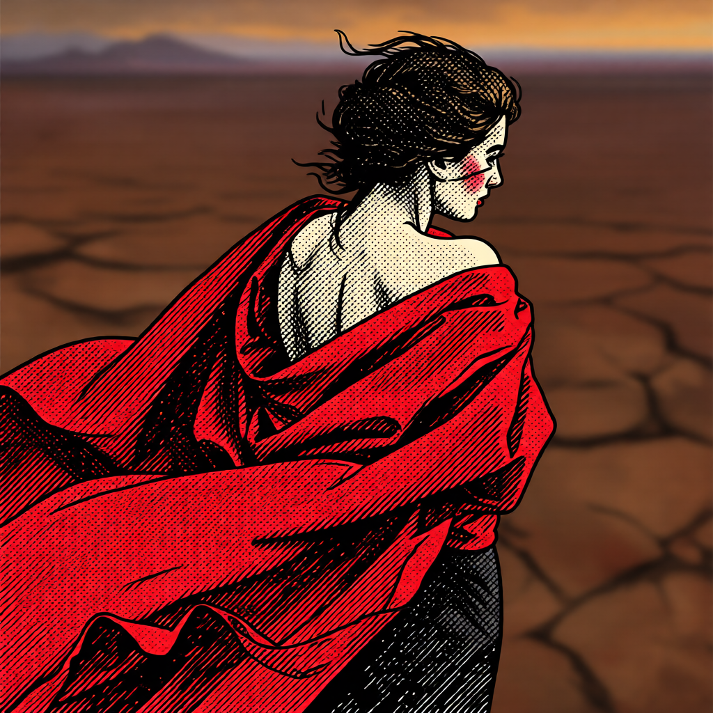

Editor and compositor for a YouTube comedy channel. Original AI-generated video, 3D, and image work produced end to end.
A note on AI: every piece here that uses AI-generated material is still directed, composited, and finished by me. I write the prompts, pick the results worth keeping, do the compositing and color work, and cut the final edit. The tools generate raw material. The creative decisions are mine.
I don't share the doomer view of AI, that it marks the end of art or the end of civilization. Centuries of mathematics and computation led to this point, and I think that's worth treating as an accomplishment, not a threat.
Original work. Generation, compositing, edit, and voice, done start to finish by one person.
Franklin Meets Michael
Original short · Editor, Compositor, Voice
A Ken Burns style mockumentary built from curated GTA V screenshots, with black-and-white grading and film grain added in Adobe Premiere, and Chatterbox cloned-voice narration matching the Civil War documentary treatment Ken Burns is known for. Cut vertical.
GTA V, the Opening Scene
Original short, companion to Franklin Meets Michael · Editor, Compositor, Voice
Same Ken Burns style mockumentary treatment applied to GTA V's opening scene: curated screenshots, black-and-white grading and film grain in Adobe Premiere, and Chatterbox cloned-voice narration. Cut vertical.
Noir Trailer
Original short, AI generation and edit
A short AI-generated trailer for a fictional noir story. Video generated with Grok Video and LTX 2.3, images generated with Grok and edited with Qwen Image Edit (2509), music from Suno AI. Final edit and post-processing in Adobe Premiere.
Desert Drive
Original 3D short, Burning Village Studios · Blender, 3D Animation
A skeleton drives through a fully built desert environment, an animated water texture rippling across the car's exterior, with an animated lion riding in the passenger seat. The scene includes custom buildings, power lines, mountains, sculptures, and desert foliage. Built in Blender with Claude and the Blender MCP for animation, and Meshy AI-generated 3D assets.
Desert at Night, Aerial Sweep
Original 3D short, Burning Village Studios · Blender, 3D Animation
A companion shot to Desert Drive: the same Burning Village desert scene at night, with a more dramatic aerial camera sweep. Built in Blender with Claude and the Blender MCP for animation, and Meshy AI-generated 3D assets.
In the Booth, Star Fox
Original AI music short, Burning Village Studios · Image and Audio to Video
Star Fox sings a popular AI internet song in the style of "in the booth" music content, lip-synced from a single Grok-generated still using LTX 2.3 image and audio to video in ComfyUI, with the Burning Village title in the background.
Skeleton Dance
Original AI motion short · Motion Sync
A skeleton character dances to a song by Ethan French, animated with KlingAI motion sync from a single still image and a reference dance video.
Woman and Cheetah
Original AI motion short, Burning Village Studios · Compositing and Animation
A companion piece to the Star Fox video: a composited photo of a woman posing with a cheetah in front of the Burning Village logo, brought to life with Grok Video. Composited in Adobe Photoshop.

Ink Portrait, Music Cover Art
Original still, image edit · Qwen Image Edit (2509)
A stylistic portrait built for use as cover art alongside a Suno AI music piece: dense crosshatching and heavy ink linework applied with Qwen Image Edit, keeping the subject's identity recognizable.
Client work. Cutting, green-screen compositing, and art direction.
Episode 14, Marsha's Book
Kyle Dunnigan Show · Editor / Compositor
Composited green-screen talent into a built environment alongside keyframed animation, composited Photoshop set pieces, and AI-generated elements produced with Grok and ComfyUI. Edited in Adobe Premiere.
Marsha's Book, Black and White Cut
Kyle Dunnigan Show, Episode 17 · Editor / Compositor
A second cut of the recurring Marsha segment, played straight in black and white with a period dramatic tone. Uses more AI-generated video and compositing than the color version, plus green-screen keying, Photoshop-built set pieces, and AI-generated elements produced with Grok and ComfyUI. Edited in Adobe Premiere.